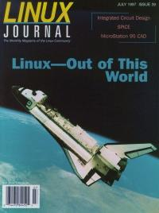

Shutdown Archive web server
Search:
Linux Journal
Issue #39/July 1997

Features
An Introduction to IC Design under Linux
by Toby Schaffer & Alan W Glaser
Linux becomes a platform that can be used to create realworld, working chips when freely available tools are used in concert.
Analyzing Circuits with SPICE on Linux
by Kevin Cosgrove
Designing many of today's circuuits would be impossible without the aid of SPICE—the Simulations Program with Integrated Circuit Emphasis.
Porting Scientific and Engineering Programs to Linux
by Charles T Kelsey IV and Gary L Masters
One can compile scientific and engineering code under Linux using free FORTRAN 77 options.
Linux Out of the Real World
by Sebastian Kuzminsky
Plant experiments run by Linux ride the space shuttle.
News & Articles
Octave: A Free, High-Level Language for Mathematics
by Malcolm Murphy
Programming with the XForms Library, Part 1
by Thor Sigvaldason
Send Your Smile By E-mail
by Frank Pilhofer
Letter to Bob: Configuring an Intel Linux System
by Jon “maddog” Hall
CeBIT '97
by Belinda Frasier
Reviews
Product Review
MicroStation 95 for Linux
by Bradley Willson
Book Review
Learning the bash Shell
by Danny Yee
Book Review
Source Code Secrets: The Basic Kernel
by Phil Hughes
WWWsmith
At the Forge
Multiple Choice Quizes, Part 3
by Reuven Lerner
Columns
Letters to the Editor
From the Publisher
Is Linux Reliable Enough?
Stop the Presses
Linux Expo
by Jon “maddog” Hall
Take Command
wc
by Alexandre Valente Sousa
Linux Means Business
MYDATA's Industrial Robots
by Tom Bjorkholm
Linux Gazette
Clueless at the Prompt
by Mike List
New Products
Best of Technical Support
Archive Index
Shutdown Archive web server
Search:
Copyright © 1994 - 2018
Linux Journal
. All rights reserved.